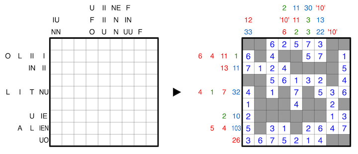

Clues outside the grid indicate the sums of connected groups of numbers in the respective row or column, in order, where shaded cells serve as delimeters between groups.
The clues have been written by three extraterrestrials, each of which is familiar with only one number base, which might not be our usual 10. However, it is unknown which extraterrestrial wrote which clue. A letter can replace any number from 0 to N-1, where N is the base of the clue, and no two letters replace the same number. No clue may have a leading zero.
A 1-7 example with two extraterrestrials is provided. In this example, one extraterrestrial uses base 11 and the other uses base 4, with clues marked in red and blue respectively. The clues marked in green could have been written by either extraterrestrial.
